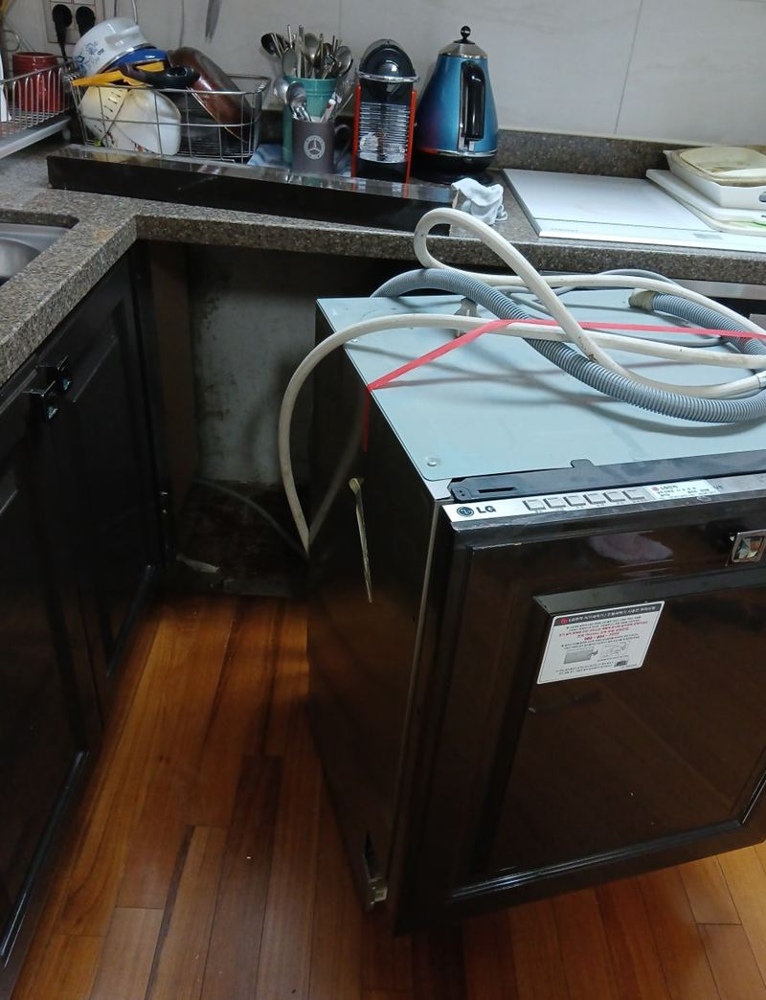
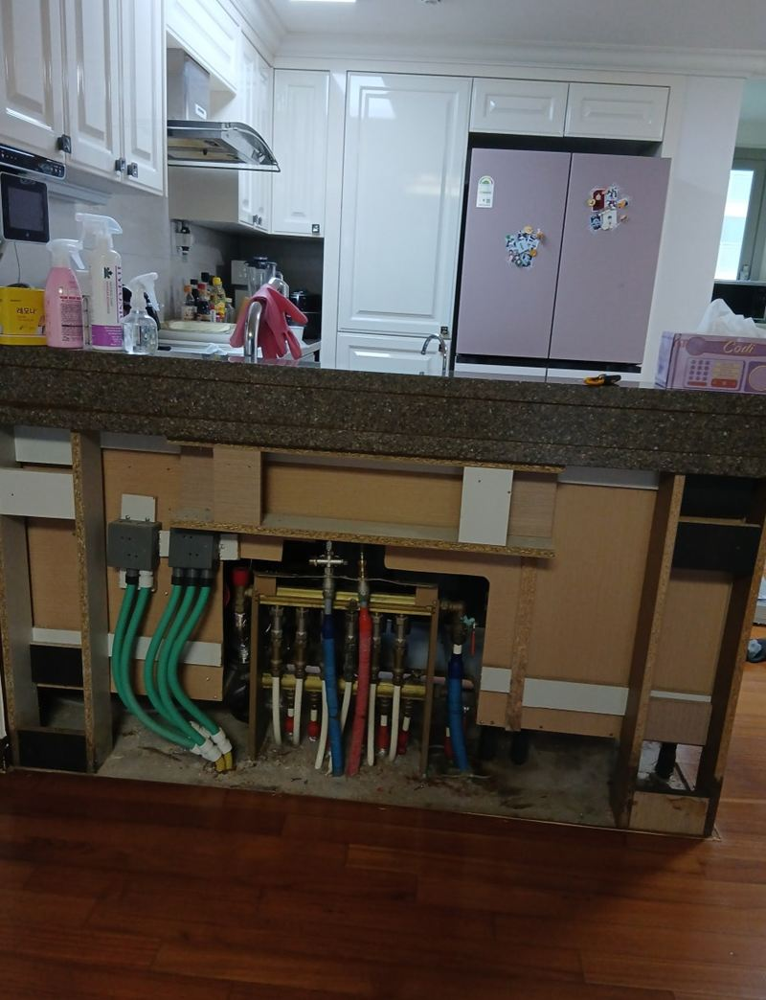
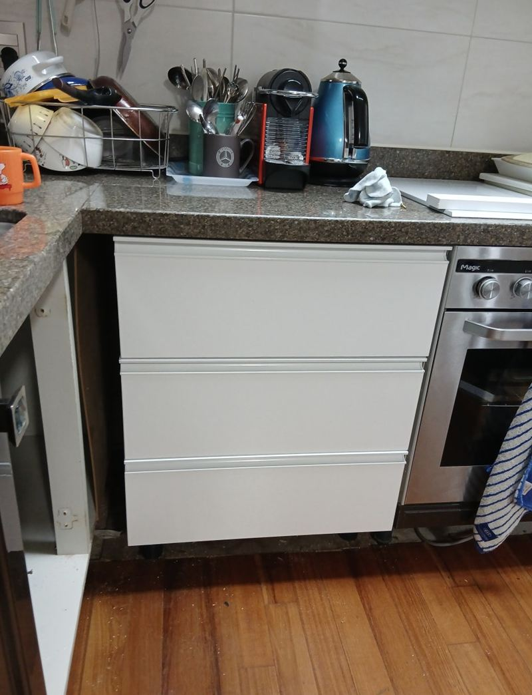
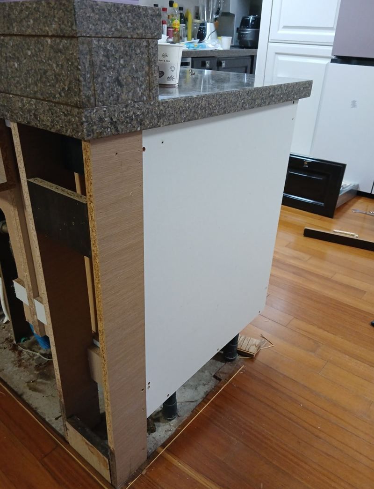
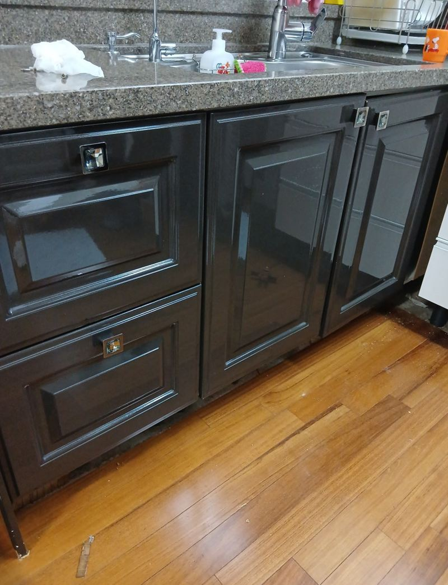
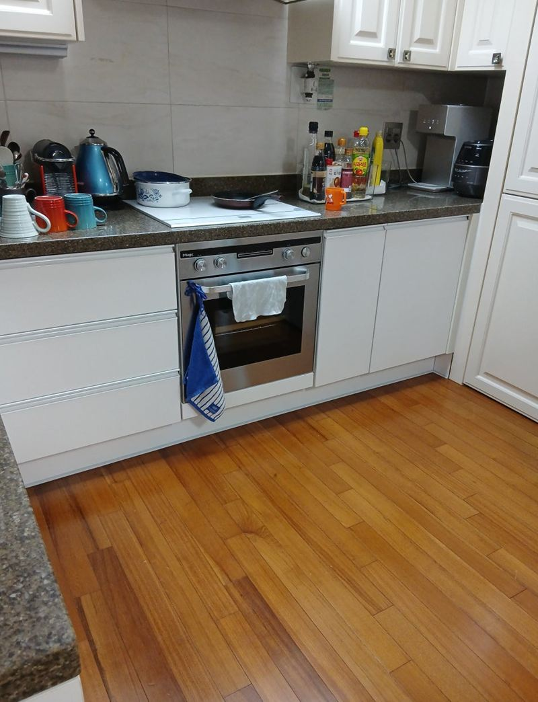

성남 식기세척기 주방문 설치 방법과 장점
← 밀어서 전후 비교 →
"식기세척기는 거의 안 써서 빼고 그 자리에 하부장을 넣고 싶어요. 블랙 하부장도 화이트로 바꾸면 산뜻해질 것 같은데 괜찮을까요?" 성남 중앙동 아파트 주방이었어요. 10년 넘게 쓴 짙은 하부장 때문에 주방이 어두워 보였고, 식세기 자리는 수납도 안 되는 빈 칸처럼 남아 있었어요. 식세기를 떼고 같은 높이·깊이로 맞춘 하부장을 짜 넣은 뒤, 하부장 문짝과 걸레받이를 화이트로 통일했어요.
| 현장 | 성남 중원구 중앙동 아파트 주방 |
|---|---|
| 요청 | 안 쓰는 식세기 철거, 그 자리 수납장, 블랙 → 화이트 |
| 한 일 | 식세기·연결 부속 철거 → 맞춤 하부장 제작·설치(보강재 포함) → 하부장 문짝 화이트 EP도어로 교체 → 걸레받이 색 통일 |
| 맞춘 것 | 기존 싱크대와 높이·깊이·문 라인 |
안 쓰는 식세기 자리, 수납장으로
빌트인 식기세척기는 쓰지 않으면 그 칸 전체가 쓸모없는 공간이 돼요. 문을 열 일이 없으니 안쪽에 먼지가 쌓이고, 청소도 손이 잘 안 가요. 그 자리를 하부장으로 바꾸면 냄비나 양념통을 넣을 칸이 생기고, 조리대 아래 동선도 끊기지 않아요.


식세기를 뺄 때는 급수·배수 호스와 전원 같은 연결 부속도 함께 정리해야 해요. 오래된 부속을 그대로 두면 나중에 물이 새거나 새 하부장이 들어갈 자리를 막아요.
식세기 철거 후 하부장 넣는 순서
식세기와 연결 부속 철거
본체를 분리하고 낡은 연결 부속을 걷어 냈어요.
맞춤 하부장 제작·설치
옆 하부장과 같은 깊이·높이로 새 장을 짜 넣었어요. 위에 상판이 얹히는 자리라 안쪽에 보강재를 넣어 처지지 않게 했어요.


문짝 교체
기존 블랙 문짝을 떼고 화이트톤 EP도어로 바꿨어요. 경첩 위치와 문 사이 간격을 맞춰 줄이 고르게 보이게 했어요.


걸레받이까지 색 맞춤
문짝만 하얗고 아래가 검으면 끊겨 보여서, 걸레받이도 같은 톤으로 바꿔 마무리했어요.
문짝 색만 바꿔도 주방이 달라져요
구조는 그대로인데 하부장 색 하나 바꾸니 주방이 밝아지고 넓어 보였어요. 짙은 색은 고급스럽지만 오래 쓰면 답답해 보이고, 물때나 긁힘도 잘 보여요. 화이트는 상부장·벽과 이어져 공간이 트여 보이는 효과가 있어요.
10년 넘게 쓴 하부장은 습기와 기름 때문에 문짝이 뒤틀리거나 안쪽에 곰팡이가 생기기 쉬워요. 문짝과 새 하부장으로 바꾸면서 위생도 함께 정리됐어요.
고객분은 "블랙이라 칙칙했는데 하얗게 바꾸니 주방이 넓어 보이고 환하다, 애매하던 식세기 자리에 수납까지 생겨 만족한다"며 다음엔 상부장도 손보고 싶다고 하셨어요.
문짝 다시 달 때 주의할 점
- 높이와 깊이기존 싱크대와 몇 mm만 달라도 문이 삐뚤게 닫혀요.
- 색 맞춤일부만 바꿀 땐 남는 장과 색이 어울리는지 샘플로 확인해요.
- 안쪽 물건문이 닫힐 때 걸리지 않게 선반 높이까지 실측해요.
식기세척기 자리 하부장 질문
나중에 식세기를 다시 넣을 수 있나요?
배관과 전원 자리를 막지 않고 정리해 두면 나중에 다시 넣기 쉬워요. 미리 말씀해 주세요.
문짝만 바꾸고 몸통은 그대로 써도 되나요?
몸통이 튼튼하면 문짝만 바꿔도 돼요. 붓거나 처졌다면 몸통도 같이 봐요.
서랍형 하부장으로 넣을 수도 있나요?
폭에 맞춰 서랍형이나 여닫이형 중에 고를 수 있어요.
상판은 그대로 두나요?
기존 상판을 그대로 쓰는 게 보통이에요. 상판이 들려 있으면 높이를 다시 맞춰요.
철거한 식세기는 가져가나요?
원하시면 떼어 낸 본체를 가지고 나가요. 따로 팔거나 쓰실 거면 미리 말씀해 주세요.
EP도어가 뭔가요?
표면에 필름을 입힌 문짝이에요. 색이 다양하고 물걸레질이 쉬워 주방 하부장에 많이 써요.
다른 식기세척기 현장
식세기 자리와 주방 전체 사진, 원하는 색을 알려주세요.
전화 상담 010-4517-9872